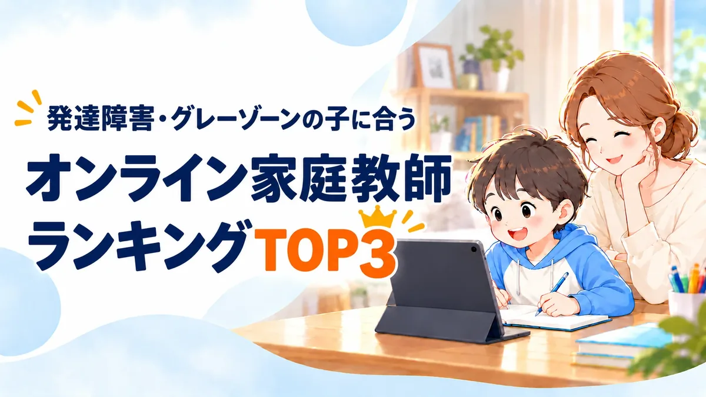

PR当サイトはアフィリエイト広告を利用しており、ソウガクのプロモーションを含みます。順位は広告の有無ではなく、公開している採点基準で決めています（2026年10月最新版）。
発達障害・グレーゾーンの子に合う オンライン家庭教師ランキングTOP3

※よくある迷いを編集部が会話形式にしたものです（人物はイメージ）。
発達特性に強いオンライン家庭教師TOP3
1位ソウガクの料金プラン｜目的別の例
横にスクロールできます


※月額はソウガク公式サイトの料金表（月4回・税込、2026年10月16日確認）。入会金22,000円（税込）は別途（キャンペーンで無料の場合あり）。月8回のコースもあります。写真はイメージです。
3社を7項目で採点
| サービス | 月額の目安 | 編集部のひとこと | 公式 |
|---|---|---|---|
| 1 | ○月13,200円〜 25分から | サービス全体が発達障害・グレーゾーン専門。先生は全員、専門機関の研修を受けた社会人。担当予定の先生と2回の無料体験で相性を確かめられる。
| 公式 |
| 2 | ◎月9,000円〜 30分から | 発達障害コミュニケーション指導者のスタッフが先生を支える。料金は指導した分だけ。
| 公式 |
| 3 | ◎月10,560円〜 30分から | 不登校専門。授業の曜日・時間・回数を固定せず、受けた分だけ後払い。出席扱いの申請にも対応。
| 公式 |
| サービス | 発達特性への対応 | 先生 | 保護者サポート |
|---|---|---|---|
| ソウガク | ◎5 | ◎5 | ◎5 |
| ランナー | ○4 | ○4 | ○4 |
| ティントル | ○4 | ○4 | ○4 |
| サービス | 1回の授業 | 入会前の体験 | 費用・契約 |
|---|---|---|---|
| ソウガク | 小学生25分・50分・75分 中高生35分・60分・75分 | 2回。担当予定の先生が担当（1回目は保護者面談にもできる） | ◎5 |
| ランナー | 30分単位で組める | 90分の体験レッスン（学習アドバイザーが担当。先生は入会後に選考） | △3 |
| ティントル | 1コマ30分 | 個別相談会（約1時間・サポートスタッフが担当）。子どもの体験は希望制 | △2 |
※月額の目安は小学生の公式の最安表示。◎＝11,000円未満、○＝11,000〜14,999円、△＝15,000円以上。数字（5点満点）と星・総合評価の付け方はランキング調査概要に公開しています。各社公式サイトの記載をもとにした当サイト独自の評価です（2026年10月16日確認）。
発達特性の子に大事な17項目で詳しく比較
先生・体験・授業の長さ・報告・費用や契約まで、各社の公式サイトに書かれていることを並べました。ソウガクは17項目のうち13項目で◎。料金の安さと、学校に行きづらい子向けの仕組みは、ランナー・ティントルに◎を付けています。
横にスクロールできます
| 項目 | 1位 ソウガク | 2位 ランナー | 3位 ティントル |
|---|---|---|---|
| 専門の範囲 | ◎発達障害・グレーゾーン専門 | ○勉強が苦手な子専門。発達障害サポートはコースの一つ | ○不登校専門。発達障がい・グレーゾーンも対象 |
| 専門家の関わり | ◎専門機関（発達凸凹アソシエーション）が講師研修・アセスメントシート・教材アドバイス | ○「発達障害コミュニケーション指導者」の本部スタッフが先生を指導 | ○不登校心理相談士の本部スタッフが家庭を担当 |
| 先生 | ◎全員が社会人。全員が専門機関の研修を受講。臨床心理士・作業療法士などの資格者も在籍 | ○大学生〜社会人の登録者から本部が選考（紹介ページは大学生・大学院生が中心） | △全員が現役の大学生 |
| 指導計画 | ◎専門家が開発したアセスメントシートで一人ずつ作成。体験後に受け取れる | ○決まったカリキュラムを置かず、特性に合わせて教え方を変える | ○入会前のカウンセリングをもとに決める |
| 最短の授業 | ◎小学生25分・中高生35分 | ○1コマ30分単位 | ○1コマ30分 |
| 体験を担当する人 | ◎入会後に担当する予定の先生 | △学習アドバイザー（先生は申込後に選考） | △サポートスタッフ（講師は入会書類の返送後に決定） |
| 体験の回数・時間 | ◎2回。小学生25分か50分（中高生35分か60分）。1回目を保護者面談にもできる | ○1回・90分程度 | ○保護者の相談会 約1時間（何度でも）。子どもの体験は希望制 |
| 授業の報告 | ◎毎回、アプリで指導報告 | ○毎月の指導報告書 | －保護者向けの定期報告の頻度は記載なし |
| 保護者の相談 | ◎先生・本部にチャット。定期的な保護者面談、保護者向け勉強会 | ○公式LINE・電話・メール・Web面談 | ◎不登校心理相談士がLINE・電話・オンライン面談（無料） |
| 診断・手帳 | ◎不要（診断名の申告・手帳の提出も不要） | ○グレーゾーンも対象と記載 | ○検査を受けていない子も対応と記載 |
| 時間の融通 | ○土日・夜21時〜・午前も可。回数・時間は月ごとに変更、同じ月内で振替 | ○指導した分だけ支払い。20時・21時開始も可 | ◎曜日・時間・回数を固定しない。1時間前までキャンセル無料 |
| 学校に行きづらい子 | ○午前中の授業に対応 | ○不登校のコースあり | ◎不登校専門。出席扱いの申請オプション（有料） |
| 小学生の料金 | ○25分×月4回 13,200円（税込） | ◎1コマ30分900円。9,000円〜（税込・税抜の記載なし） | ◎1コマ30分1,320円〜。週1回1時間で月10,560円〜（税込） |
| 入会金 | ○22,000円（税込）。キャンペーンで無料の場合あり | －公式に記載なし | －公式に記載なし |
| 教材費 | ◎購入不要。学習ツール（映像授業2,000本など）も追加費用なし | ○高額教材の販売なし（広告用LPの記載） | －公式に記載なし |
| 解約・違約金 | ◎違約金・途中解約料0円、契約期間の縛りなし、月単位で休会・退会 | △本体ページに記載なし（広告用LPに「1ヶ月ごとの更新制、違約金は基本的になし」） | －公式に記載なし |
| 先生の交代 | ◎何度でも無料。性別の希望も伝えられる | ○何度でも無料 | －公式に記載なし |
※◎＝3社の中で最も手厚い、○＝ある、△＝限られる、－＝公式に記載なし（当サイトの判断）。各社公式サイトの記載（2026年10月16日確認）。ランナーは本体ページに書かれていない項目を、広告用LPの記載で補った箇所があります（その旨を表に記載）。
診断なし・グレーゾーンでも相談OK
無料体験を公式で見るひと目でわかる3社の位置
- ✔ 担当予定の先生と体験2回
- ✔ 全員が研修を受けた社会人講師
※縦は当サイトの採点「入会前に確かめられること」、横は「発達特性への対応」と「先生の体制」の合計（基準）。
ソウガクの無料体験2回で
先生との相性を確かめましょう！
体験1回目保護者と先生の面談にもできる
- 担当予定の先生と話せる！
体験を担当するのは、入会後に担当する予定の先生。子どもの様子や苦手なことを、先に保護者から伝えられます。 - 体験の前に教務担当がヒアリング
学習状況や希望の先生・日時を聞いたうえで、先生が選ばれます。
診断なし・グレーゾーンでも相談OK
無料体験を公式で見る体験2回目子どもが実際の授業を受ける
- 小学生は25分か50分！
中高生は35分か60分。最初に流れを説明して、できることから始めます。 - 体験後に指導計画がもらえる
得意・不得意をまとめた、その子だけの指導計画を受け取れます。相性が合えば、そのまま同じ先生が担当します。
診断なし・グレーゾーンでも相談OK
無料体験を公式で見る※体験は無料・2回まで（1回目から子どもの授業にすることもできます）。申込フォームは「簡単3分。無理な入会・教材販売はございません」と公式に記載（公式のよくある質問、2026年10月16日確認）。
発達特性に強いオンライン家庭教師
ランキングTOP3
先生との相性は、体験してみないと分かりません。ソウガクは入会後に担当する予定の先生と2回体験できるので、まずはそこで確かめるのがおすすめです。
1ソウガク
発達特性を学んだ社会人講師が25分から教える！
担当予定の先生と無料体験2回
診断なし・グレーゾーンでも相談OK
無料体験を公式で見る特徴
- 先生は全員専門機関の研修を受けた社会人講師
- 専門家が開発したアセスメントシートで、一人ずつ指導計画をつくる
- 授業は小学生25分から（中高生は35分から）
- 無料体験は2回。入会後に担当する予定の先生が担当
- 授業のたびにアプリで指導報告。先生・本部にチャットで相談
- 違約金・途中解約料0円。契約期間の縛りなし
- 対象：小学生〜高校生
※編集部の採点（基準はランキング調査概要）。総合評価 4.9
| 料金の目安 | 対応学年 |
|---|---|
| 月13,200円〜小学生25分×月4回・税込。別途入会金22,000円（キャンペーンで無料の場合あり） | 小学生〜高校生全国・オンライン（Zoom） |
| 1回の授業 | 先生 |
| 小学生25分・50分・75分 中高生35分・60分・75分 | 全員が専門機関の研修を受けた社会人講師 |
| 保護者サポート | 無料体験 |
| 毎回の指導報告・先生/本部とチャット・定期的な保護者面談・保護者向け勉強会 | 2回。担当予定の先生が担当（1回目は保護者面談にもできる） |
※各社公式サイトの記載（2026年10月16日確認）。
横にスクロールできます
※すべて税込。入会金22,000円（税込）は別途。学年が上がっても、受験生になっても、科目を増やしても料金は変わりません。出典：ソウガク公式サイト（2026年10月16日確認）
編集部のイチオシポイント
ソウガクは、サービス全体が発達障害・グレーゾーン専門です。先生は全員が社会人で、発達支援の専門機関「発達凸凹アソシエーション」の研修を受けています。臨床心理士や作業療法士、放課後等デイサービスで働いた経験のある先生も在籍しています。入会後に担当する予定の先生と、2回の無料体験で試してから決められると公式に明記しているのは、3社の中でソウガクだけでした※1。授業は小学生なら25分から選べて、違約金や途中解約料もかかりません。「長い授業は続かないかも」「先生との相性が心配」という家庭が、最初に試しやすいサービスです。
※1 各社公式サイトの無料体験の説明による（2026年10月16日確認）
ソウガクの口コミ
 中学2年生・特別支援学級の保護者
中学2年生・特別支援学級の保護者勉強に苦手意識があり、初回の体験では画面の前に座っているのも難しかった。先生が急がずに時間をかけて関係をつくり、今は授業の時間を楽しみにしている。
- 小学4年生・ADHDの診断ありの保護者
学校へ行ける日が減り、家で勉強を見ると親子で言い合いになっていた。週1回オンラインで学ぶ習慣ができ、「ずっと自分が見なければ」という負担が軽くなった。
- 中学2年生の保護者（岡山県）
子どものタイプに合わせた学び方を相談できる先生に初めて出会えた。他社と違って、体験を何回か受けられたのも助かった。
※ソウガク公式サイト掲載の声を当サイトで要約。個人の感想です。アイコンはイメージです。
こちら
診断なし・グレーゾーンでも相談OK
無料体験を公式で見る2家庭教師のランナー
勉強が苦手な子専門。発達障害サポートあり
先生は約14万人の登録から本部が選ぶ
他社との比較も歓迎と公式に明記
無料体験レッスンを公式で見る特徴
- 「発達障害コミュニケーション指導者」のスタッフが担当の先生を指導
- 体験で作ったカルテから先生候補を10〜20名選び、面談して決める
- 1コマ30分900円（小中学生）。指導した分だけの支払い
- 分からない問題はLINEで写真を送ると、解説動画で返ってくる
- 対象：未就学児〜高校生
※編集部の採点（基準はランキング調査概要）。総合評価 4.0
| 料金の目安 | 対応学年 |
|---|---|
| 小学生 月9,000円〜教科数・時間・回数で変わる。地域差あり | 未就学児〜高校生オンラインは全国・海外から |
| 1回の授業 | 先生 |
| 30分単位で組める1コマ30分900円〜（高校生1,000円〜） | 大学生〜社会人の登録者から本部が選考し、指導前に研修先生紹介のページは大学生・大学院生が中心 |
| 保護者サポート | 無料体験 |
| 公式LINEで相談・本部から定期的に状況確認 | 90分の体験レッスン（学習アドバイザーが担当。先生は入会後に選考） |
※各社公式サイトの記載（2026年10月16日確認）。
編集部のイチオシポイント
ランナーは「勉強が苦手な子専門」の家庭教師で、その中に発達障害サポートがあります。決まったカリキュラムを置かず、特性に合わせて教え方を変える方針です。料金は1コマ30分900円（小中学生）からで、指導した分だけの支払い。約14万人の登録から本部が先生を選び、合わなければ何度でも無料で交代できるので、先生選びを丁寧にしたい家庭に向いています。
ランナーの口コミ
- 会員の保護者（公式サイト掲載）
息子は対面が苦手で、オンラインを強く希望した。始めてみると対面と変わらず、分からないところは何度も教えてもらえた。
- 会員の保護者（公式サイト掲載）
先生が、親からの勉強の相談にも丁寧にのってくれた。
※ランナー公式サイト掲載の声を当サイトで要約。個人の感想です。アイコンはイメージです。
こちら
他社との比較も歓迎と公式に明記
無料体験レッスンを公式で見る3ティントル
学校に行きづらい子の専門オンライン個別指導
30分単位、受けた分だけの後払い
まずは個別相談会から
個別相談会を公式で見る特徴
- 不登校専門。発達障がい・支援級・行き渋りの子も対象
- 1コマ30分、受けた分だけの後払い。曜日・回数は自由
- 講師とは別に、不登校心理相談士の資格を持つスタッフが家庭を支える
- 自宅学習を学校の出席扱いとして申請できるコースあり
- 対象：小学生〜高校生
※編集部の採点（基準はランキング調査概要）。総合評価 3.7
| 料金の目安 | 対応学年 |
|---|---|
| 小学生 週1回1時間 月10,560円〜4週換算・税込（Cランクの講師） | 小学生〜高校生全国・オンライン |
| 1回の授業 | 先生 |
| 1コマ30分曜日・時間・回数は自由 | 現役の大学生（講師研修・不登校対応の研修あり） |
| 保護者サポート | 無料体験 |
| 不登校心理相談士がオンライン面談・LINE・電話で相談 | 個別相談会（約1時間・サポートスタッフが担当）。子どもの体験は希望制 |
※各社公式サイトの記載（2026年10月16日確認）。
横にスクロールできます
※すべて税込。講師のランク（S〜C）で1コマの料金が変わり、高校生はS・Aランクのみ。入会金・解約の決まりは公式サイトに記載なし。出典：ティントル公式サイト（2026年10月16日確認）
編集部のイチオシポイント
ティントルは不登校専門のオンライン個別指導で、発達障がいや支援級、行き渋りの子も対象にしています。授業は1コマ30分単位で、曜日・時間・回数を固定しません。「慣れるまでは少なめに、しんどい日は休む」という使い方ができるので、学校に行きづらい日が続いている家庭に向いています。先生は現役の大学生です。
ティントルの口コミ
- 中学2年生の保護者（公式サイト掲載）
先生のおかげで、勉強への意欲が少しずつ出てきた。宿題を出してもらえるのも親としてありがたい。
- 個別相談会に参加した保護者（公式サイト掲載）
子どもの困りごとを理解して無理のない提案をしてもらえたが、本人のやる気がいまひとつで、入会はいったん見送った。
※ティントル公式サイト掲載の声を当サイトで要約。個人の感想です。アイコンはイメージです。
こちら
まずは個別相談会から
個別相談会を公式で見る迷ったらまずは
ソウガクの無料体験から！
ソウガク
発達特性を学んだ社会人講師と、25分の短い授業から。担当予定の先生と2回試してから決められます。違約金・途中解約料は0円です。
診断なし・グレーゾーンでもOK
無料体験を公式で見る
※診断は各社公式サイトの記載（2026年10月16日確認）をもとに当サイトが判定したもので、合う・合わないを保証するものではありません。入力した内容は送信・保存しません。